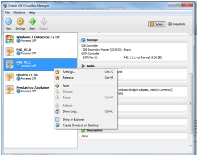
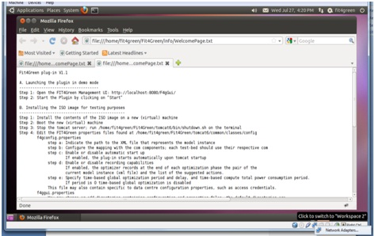
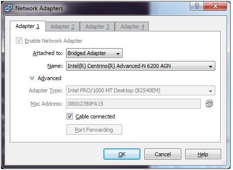

From the main window of VirtualBox, right click on the VM you want to configure (the VM must be off) and select Settings
In the left panel of the Settings window select Network
In the Adapter1 tab check the Enable Network Adapter check-box
From the Attached to: combo select Bridged Adapter
From the Name combo, select the name of the network connection you are going to use.

Please note that you can use either the Ethernet connection or the wireless connection. This setting can be modified also after the creation of the VM, even while the VM is on.
In this latter case, you have to:
Right click on the networking icon on the bottom right side of the window displaying the VM, and click on Network Adapters
Select the other network adapter from the Name combo box and click OK
After some seconds the OS will detect the change in the network adapter and it will get another IP address.